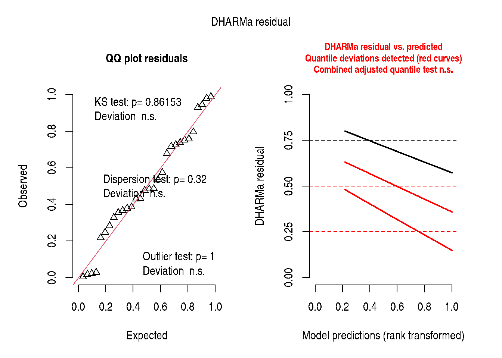

Chapter 6: Inference, Part I
The Unified Framework for Generalised Linear Mixed Models
2026-05-17
Source:vignettes/chapter-06-glmm-overview.qmd
1 Overview
Chapter 6 unifies the models developed in earlier chapters under the Generalised Linear Mixed Model (GLMM) framework.
The GLMM has three components:
- Random component: \(Y_i \mid \mathbf{b} \sim\) exponential family with mean \(\mu_i\)
- Systematic component (linear predictor): \(\eta_i = \mathbf{x}_i^\top\pmb{\beta} + \mathbf{z}_i^\top\mathbf{b}\)
- Link function: \(g(\mu_i) = \eta_i\)
1.1 Common link functions
| Distribution | Link | \(g(\mu)\) |
|---|---|---|
| Gaussian | Identity | \(\mu\) |
| Binomial | Logit | \(\log[\mu/(1-\mu)]\) |
| Poisson | Log | \(\log(\mu)\) |
| Gamma | Log | \(\log(\mu)\) |
| Beta | Logit | \(\log[\mu/(1-\mu)]\) |
1.2 Random effects structure
\[\mathbf{b} \sim \mathcal{N}(\mathbf{0}, \mathbf{G}(\pmb{\theta}))\]
The variance component vector \(\pmb{\theta}\) is estimated by REML (for Gaussian) or by maximum likelihood / Laplace approximation (for non-Gaussian families).
2 The lme4 Formula Language
The GLMM formula in lme4 follows a compact syntax:
response ~ fixed_effects + (random_slope | grouping_factor)| Formula part | Meaning |
|---|---|
(1 \| g) |
Random intercept by group \(g\) |
(x \| g) |
Random intercept + slope for \(x\) by \(g\) |
(0 + x \| g) |
Random slope only (no intercept) |
(1 \| g/h) |
Random intercept, \(h\) nested in \(g\) |
3 Illustration: Poisson GLMM
The following illustrates a Poisson GLMM using the blocked count data from Chapter 11 (DataSet11.3):
data(DataSet11.3)
DataSet11.3$block <- factor(DataSet11.3$block)
DataSet11.3$trt <- factor(DataSet11.3$trt)
## Fit Poisson GLMM
fit_pois <- lme4::glmer(
count ~ trt + (1 | block),
family = stats::poisson(link = "log"),
data = DataSet11.3,
control = lme4::glmerControl(optimizer = "bobyqa")
)
summary(fit_pois)Generalized linear mixed model fit by maximum likelihood (Laplace
Approximation) [glmerMod]
Family: poisson ( log )
Formula: count ~ trt + (1 | block)
Data: DataSet11.3
Control: lme4::glmerControl(optimizer = "bobyqa")
AIC BIC logLik -2*log(L) df.resid
375.0 380.6 -183.5 367.0 26
Scaled residuals:
Min 1Q Median 3Q Max
-6.4780 -1.3441 0.0751 1.3780 6.0191
Random effects:
Groups Name Variance Std.Dev.
block (Intercept) 1.233 1.111
Number of obs: 30, groups: block, 10
Fixed effects:
Estimate Std. Error z value Pr(>|z|)
(Intercept) 1.4549 0.3744 3.886 0.000102 ***
trt2 0.5083 0.1408 3.610 0.000306 ***
trt3 1.1670 0.1274 9.160 < 2e-16 ***
---
Signif. codes: 0 '***' 0.001 '**' 0.01 '*' 0.05 '.' 0.1 ' ' 1
Correlation of Fixed Effects:
(Intr) trt2
trt2 -0.235
trt3 -0.260 0.690
## Overdispersion check
if (requireNamespace("performance", quietly = TRUE)) {
performance::check_overdispersion(fit_pois)
}# Overdispersion test
dispersion ratio = 7.129
Pearson's Chi-Squared = 185.365
p-value = < 0.001
## DHARMa diagnostics
if (requireNamespace("DHARMa", quietly = TRUE)) {
DHARMa::simulateResiduals(fit_pois, plot = TRUE)
}
Object of Class DHARMa with simulated residuals based on 250 simulations with refit = FALSE . See ?DHARMa::simulateResiduals for help.
Scaled residual values: 0.7574428 0.6786155 0.5365879 0.47588 0.944 0.7954783 0.5746475 0.7175266 0.02834456 0.7374608 0.7252719 0.7522183 0.02194105 0.3661984 0.3275792 0.98 0.4298969 0.4834902 0.2166665 0.385463 ... trt rate SE df asymp.LCL asymp.UCL
1 4.28 1.60 Inf 2.06 8.92
2 7.12 2.62 Inf 3.46 14.64
3 13.76 4.99 Inf 6.76 28.03
Confidence level used: 0.95
Intervals are back-transformed from the log scale
if (requireNamespace("report", quietly = TRUE)) {
report::report(fit_pois)
}We fitted a poisson mixed model (estimated using ML and BOBYQA optimizer) to
predict count with trt (formula: count ~ trt). The model included block as
random effect (formula: ~1 | block). The model's total explanatory power is
substantial (conditional R2 = 0.96) and the part related to the fixed effects
alone (marginal R2) is of 0.15. The model's intercept, corresponding to trt =
1, is at 1.45 (95% CI [0.72, 2.19], p < .001). Within this model:
- The effect of trt [2] is statistically significant and positive (beta = 0.51,
95% CI [0.23, 0.78], p < .001; Std. beta = 0.51, 95% CI [0.23, 0.78])
- The effect of trt [3] is statistically significant and positive (beta = 1.17,
95% CI [0.92, 1.42], p < .001; Std. beta = 1.17, 95% CI [0.92, 1.42])
Standardized parameters were obtained by fitting the model on a standardized
version of the dataset. 95% Confidence Intervals (CIs) and p-values were
computed using a Wald z-distribution approximation.4 The Modern GLMM Ecosystem
| Package | Purpose |
|---|---|
lme4 |
Core LMM/GLMM fitting |
lmerTest |
Satterthwaite df for LMMs |
glmmTMB |
Flexible GLMMs (NB, beta, zero-inflated, etc.) |
emmeans |
Marginal means and contrasts |
DHARMa |
Simulation-based residual diagnostics |
performance |
ICC, overdispersion, model fit |
parameters |
Tidy parameter tables |
report |
Automatic model interpretation |
broom.mixed |
Tidy outputs |
5 Key Takeaways
- The GLMM unifies all models: LM, GLM, LMM, and GLMM are special cases.
- The choice of link function and distribution is driven by the data generating process, not convenience.
- Modern tools (
DHARMa,performance) provide powerful diagnostics unavailable in the original SAS/PROC GLIMMIX workflow.
6 References
Stroup, W. W., Ptukhina, M., and Garai, S. (2024). Generalized Linear Mixed Models: Modern Concepts, Methods and Applications (2nd ed.). CRC Press.
Bates, D., Maechler, M., Bolker, B., & Walker, S. (2015). Fitting linear mixed-effects models using lme4. Journal of Statistical Software, 67(1), 1–48.